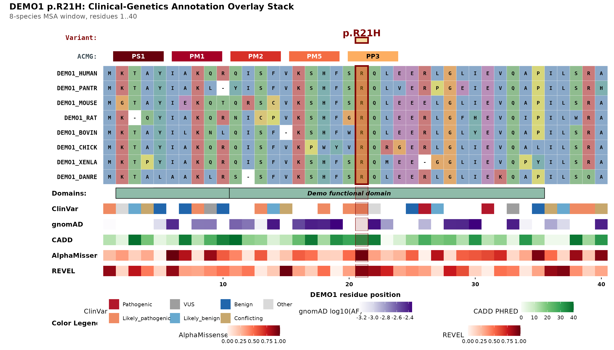
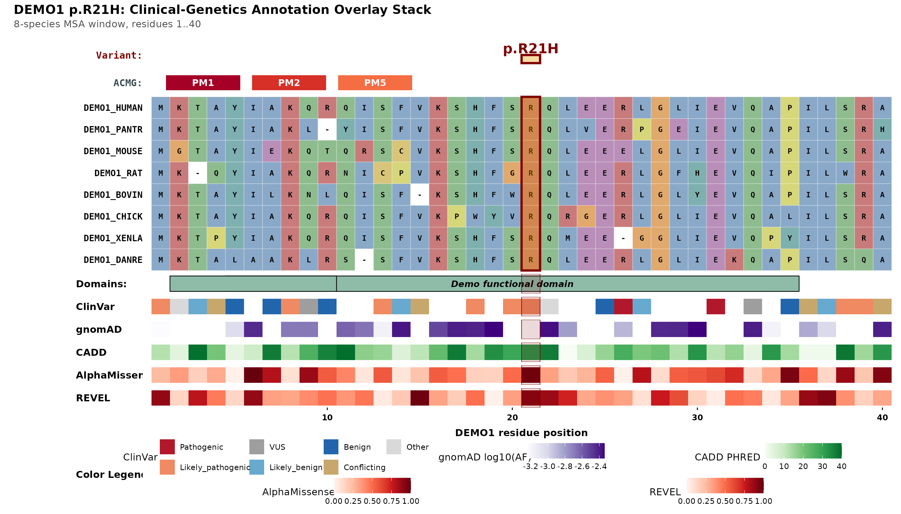

Every plot_variant_overlay() figure carries a compact
ACMG strip directly under the variant header: one
coloured chip per triggered evidence code. This article explains what
each chip means, exactly how compute_acmg_codes() decides
to draw it, and how to tune the one rule that has a user-facing
knob.
library(msaVariant)
# Use a throwaway cache so this article never touches your real one.
Sys.setenv(MSAVARIANT_CACHE = tempfile("msaVariant_cache_"))
import_local_bundle(
system.file("extdata", "DEMO1.rds", package = "msaVariant"),
gene = "DEMO1"
)
demo_fasta <- system.file("extdata", "demo_aligned.fasta",
package = "msaVariant")
demo <- fetch_gene_data("DEMO1")DEMO1 is synthetic. The bundle used throughout this article is fabricated demonstration data — not real ClinVar, gnomAD, AlphaMissense, REVEL or CADD records. It was engineered so that one variant,
p.R21H, fires all five codes at once, which makes it a convenient teaching example and a poor clinical one.
The five codes
msaVariant implements a deliberately small, transparent
subset of the ACMG/AMP evidence framework. These are the codes that can
be derived entirely from the tables already inside a gene
bundle — no extra data source, no network call, no hidden
model.
| Code | Strength | Plain-language meaning |
|---|---|---|
| PS1 | Strong | This exact amino-acid change is already a known pathogenic variant. |
| PM1 | Moderate | The residue sits inside an annotated functional domain. |
| PM2 | Moderate | The change is absent from, or vanishingly rare in, the population. |
| PM5 | Moderate | A different change at this same residue is already known to be pathogenic. |
| PP3 | Supporting | The computational predictors agree the change is damaging. |
This is not a full ACMG classifier. It computes evidence codes; it does not combine them into a Pathogenic/VUS/Benign verdict. That judgement stays with the curator.
How each code is derived
PS1 — same change, already pathogenic
Fires when the ClinVar table contains a row whose
aa_change matches the query exactly and
whose significance is "Pathogenic".
"Likely_pathogenic" does not satisfy PS1 — only a
full pathogenic assertion does.
subset(demo$clinvar, aa_change == "R21H")
#> pos aa_ref aa_alt aa_change significance review_status clinvar_id
#> 28 21 R H R21H Pathogenic 2_star DEMO9000001PM1 — inside a functional domain
Fires when variant_pos falls within the
start–end range of at least one row of the
domains table. PM1 is the only code that needs nothing but
a position, so it is evaluated even when you pass a position-only label
such as "21".
demo$domains
#> start end name accession source
#> 1 5 35 Demo functional domain PFDEMO0001 Pfam
#> 2 2 10 Demo N-terminal region IPRDEMO001 InterProResidue 21 sits inside the 5–35 “Demo functional domain”, so PM1 fires.
PM2 — absent or rare in gnomAD
Fires when the query aa_change is
absent from the gnomAD table, or present with
af_joint < 0.0001. If a bundle carries no gnomAD table
at all, the variant is treated as absent and PM2 fires.
PM5 — different change, same residue, already pathogenic
Fires when ClinVar has a record at the same position
with a different alternate residue, rated
"Pathogenic" or "Likely_pathogenic".
Note the asymmetry with PS1: PM5 accepts the likely-pathogenic tier, PS1
does not.
subset(demo$clinvar, pos == 21)
#> pos aa_ref aa_alt aa_change significance review_status clinvar_id
#> 15 21 R A R21A Pathogenic 4_star DEMO0000015
#> 28 21 R H R21H Pathogenic 2_star DEMO9000001
#> 29 21 R C R21C Likely_pathogenic 1_star DEMO9000002R21A (Pathogenic) and R21C
(Likely_pathogenic) are both different alternate residues at position
21, so PM5 fires for R21H.
PP3 — the predictors agree
PP3 counts how many of three computational predictors call the substitution damaging:
| Predictor | Passes when |
|---|---|
| AlphaMissense | am_class == "likely_pathogenic" |
| REVEL | revel_score > 0.7 |
| CADD | cadd_phred >= 25 |
subset(demo$alphamissense, aa_change == "R21H")[, c("aa_change", "am_score", "am_class")]
#> aa_change am_score am_class
#> 21 R21H 0.98 likely_pathogenic
subset(demo$revel, aa_change == "R21H")[, c("aa_change", "revel_score")]
#> aa_change revel_score
#> 21 R21H 0.92
subset(demo$cadd, aa_change == "R21H")[, c("aa_change", "cadd_phred")]
#> aa_change cadd_phred
#> 21 R21H 32All three pass for R21H. How many need to pass
before PP3 fires is the one rule you control — see below.
Calling it directly
compute_acmg_codes() is a plain function. It takes a
bundle, a position and an aa_change, and returns the
triggered codes in canonical evidence-strength order:
compute_acmg_codes(demo, variant_pos = 21, aa_change = "R21H")
#> [1] "PS1" "PM1" "PM2" "PM5" "PP3"The p. prefix is optional — "p.R21H" and
"R21H" are equivalent.
Tuning PP3 with pp3_min_predictors
pp3_min_predictors sets how many of the three predictors
must pass:
-
1— any predictor is enough (permissive) -
2— majority, the default -
3— unanimous (conservative)
Because R21H passes all three predictors, it is
completely insensitive to this setting — a useful property to be able to
demonstrate:
for (k in 1:3) {
cat("pp3_min_predictors =", k, "->",
paste(compute_acmg_codes(demo, 21, "R21H", pp3_min_predictors = k),
collapse = " "), "\n")
}
#> pp3_min_predictors = 1 -> PS1 PM1 PM2 PM5 PP3
#> pp3_min_predictors = 2 -> PS1 PM1 PM2 PM5 PP3
#> pp3_min_predictors = 3 -> PS1 PM1 PM2 PM5 PP3Variants with weaker computational support are where the knob earns
its keep. I30A passes AlphaMissense and CADD but fails
REVEL (2 of 3):
for (k in 1:3) {
cat("pp3_min_predictors =", k, "->",
paste(compute_acmg_codes(demo, 30, "I30A", pp3_min_predictors = k),
collapse = " "), "\n")
}
#> pp3_min_predictors = 1 -> PM1 PP3
#> pp3_min_predictors = 2 -> PM1 PP3
#> pp3_min_predictors = 3 -> PM1PP3 survives at 1 and 2, and drops out at
3. And L27A, which only AlphaMissense flags (1
of 3), keeps PP3 only in permissive mode:
for (k in 1:3) {
cat("pp3_min_predictors =", k, "->",
paste(compute_acmg_codes(demo, 27, "L27A", pp3_min_predictors = k),
collapse = " "), "\n")
}
#> pp3_min_predictors = 1 -> PM1 PM2 PP3
#> pp3_min_predictors = 2 -> PM1 PM2
#> pp3_min_predictors = 3 -> PM1 PM2The same argument is accepted by plot_variant_overlay()
and is forwarded straight through, so the chip strip in the figure
always matches what compute_acmg_codes() would return for
the same settings.
The strip in a figure
plot_variant_overlay(
gene = "DEMO1",
aligned_fasta = demo_fasta,
variant_pos = 21,
variant_label = "p.R21H"
)
Two behaviours are worth knowing:
Untriggered codes are hidden, not greyed out. The
strip shows only the chips that fired. If nothing fires, the row renders
a muted (no ACMG codes triggered) placeholder rather than
an empty band, so it never reads as a rendering failure.
Display is separate from computation.
acmg_codes controls which chips are drawn; the
full computation always runs underneath. To show only the moderate-tier
codes:
plot_variant_overlay(
gene = "DEMO1",
aligned_fasta = demo_fasta,
variant_pos = 21,
variant_label = "p.R21H",
acmg_codes = c("PM1", "PM2", "PM5")
)
To drop the strip entirely, set show_acmg = FALSE — see
vignette("toggling-layers").
Which codes need an alternate allele
PS1, PM2, PM5 and PP3 all compare a specific substitution, so they
are only evaluated when aa_change parses to a complete
ref+pos+alt string such as "R21H". PM1 depends only on
position and is always evaluated.
This matters when you plot a variant by position alone: you get PM1 and nothing else, rather than a spuriously confident PM2 from a lookup that could never have matched.
compute_acmg_codes(demo, variant_pos = 21, aa_change = "21")
#> [1] "PM1"In plot_variant_overlay(), aa_change is
taken from the explicit aa_change argument if given,
otherwise parsed from variant_label. Passing
variant_label = "p.R21H" is therefore enough to get the
full set; passing variant_label = "Patient 4 variant" is
not, and you should supply aa_change = "R21H" alongside
it.
See also
-
vignette("annotation-tracks")— the tables these rules read from -
vignette("toggling-layers")— hiding the strip and individual tracks -
?compute_acmg_codes— the reference page